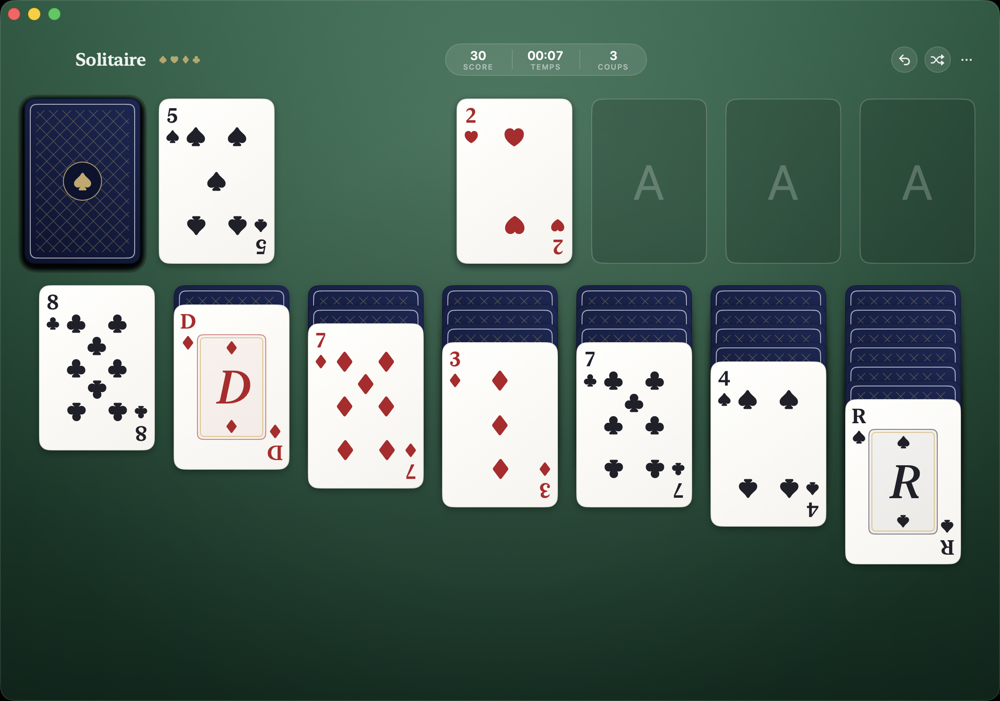

31Solitaire
Native Klondike solitaire for macOSSolitaire Klondike natif pour macOS原生 macOS 克朗代克接龍
A native Klondike laid on a felt of gradients — every card is drawn in code.Un Klondike natif posé sur un tapis de dégradés — chaque carte est dessinée en code.一款鋪在漸層牌桌上的原生克朗代克接龍——每一張牌都以程式碼繪製。
Classic pips, ornate face cards, a navy lattice back. Not a single image asset.Des points classiques, des figures ornées, un dos à treillis bleu marine. Pas une seule image.經典的花色點位、華麗的人頭牌、海軍藍格紋牌背。沒有任何一張圖片素材。
- RequiresConfiguration系統需求
- macOS 14+
- DistributionDistribution發行
- Signed & notarized DMGDMG signé et notarié已簽章與公證的 DMG
- Built withConçu avec開發技術
- 100% SwiftUI
- LicenceLicence授權
- Free & open source (MIT)Gratuit et open source (MIT)免費開源（MIT）

Full KlondikeKlondike complet完整的克朗代克
Draw 1 or draw 3, standard scoring, timer and move counter. The rules you know, the way you expect them.Pioche par 1 ou par 3, score standard, chronomètre et compteur de coups. Les règles que vous connaissez, comme vous les attendez.一次翻 1 張或 3 張、標準計分、計時器與步數計數。你熟悉的規則，就是你期待的樣子。
Real drag & dropUn vrai glisser-déposer真正的拖放
Move single cards or whole sequences. Invalid drops glide back; valid ones snap into place instantly.Déplacez une carte ou une séquence entière. Un dépôt invalide revient en glissant ; un dépôt valide se cale instantanément.可移動單張牌或整串牌。無效的放置會滑回原位；有效的放置則立即就定位。
Double-click to playDouble-clic pour jouer雙擊出牌
Double-click any eligible card and it flies to its foundation. Click the stock to draw, click again to recycle.Double-cliquez sur une carte jouable et elle s'envole vers sa fondation. Cliquez sur la pioche pour tirer, cliquez encore pour la recycler.雙擊任何可出的牌，它就會飛到對應的基礎牌堆。點一下牌庫翻牌，再點一下重新洗回。
Animated everythingTout est animé處處皆動畫
Cascading deal, 3D card flips, springy card flights — and confetti when you win.Distribution en cascade, retournements de cartes en 3D, envols de cartes à ressort — et des confettis quand vous gagnez.瀑布式發牌、3D 翻牌、帶彈性的飛牌動畫——獲勝時還有彩帶。
Unlimited undoAnnulation illimitée無限復原
⌘Z takes back any move, ⌘N deals a fresh game. No penalties, no nagging.⌘Z annule n'importe quel coup, ⌘N distribue une nouvelle partie. Pas de pénalité, pas de rappel insistant.⌘Z 可收回任何一步，⌘N 重新發一局。沒有懲罰，也不會囉嗦提醒。
Auto-completeFin automatique自動完成
Once the whole board is face up, one click on the magic wand finishes the game for you, card by card.Dès que toutes les cartes sont face visible, un clic sur la baguette magique termine la partie pour vous, carte par carte.當整個牌面都翻開後，點一下魔杖，它就會一張一張幫你完成這局。
Every card, drawn in codeChaque carte, dessinée en code每一張牌，都以程式碼繪製
Pips sit where a real deck puts them.Les points sont là où un vrai jeu les place.花色點位就在真實撲克牌上的位置。
Each rank from 2 to 10 uses the classic printed layout — mirrored bottom half included — positioned in SwiftUI from a table of unit coordinates.Chaque valeur de 2 à 10 reprend la disposition imprimée classique — moitié inférieure en miroir comprise — positionnée en SwiftUI à partir d'une table de coordonnées unitaires.從 2 到 10 的每個點數都採用經典的印刷排列——包含鏡像的下半部——並依據一張單位座標表在 SwiftUI 中定位。
Face cards are typographic.Les figures sont typographiques.人頭牌是字體設計。
Jack, Queen and King are serif letterforms framed by a gold-lined inset — an engraving reduced to its essence.Valet, Dame et Roi sont des lettres à empattements encadrées d'un filet doré — une gravure réduite à son essence.J、Q、K 是以金色細框圍起的襯線字母——一幅精簡到只剩本質的版畫。
The back is a Canvas.Le dos est un Canvas.牌背是一個 Canvas。
Navy gradient, gold diagonal lattice, spade medallion — drawn with a few paths, crisp at any size.Dégradé bleu marine, treillis diagonal doré, médaillon de pique — dessinés avec quelques tracés, nets à toutes les tailles.海軍藍漸層、金色斜格紋、黑桃徽章——只用幾條路徑繪成，任何尺寸都清晰銳利。
Even the app icon is a script.Même l'icône de l'app est un script.連 App 圖示都是一支腳本。
Scripts/make-app-icon.swiftrenders the ace-over-back artwork at every size, pixel-exact, no design tool involved.Scripts/make-app-icon.swiftproduit l'illustration de l'as posé sur le dos de carte à toutes les tailles, au pixel près, sans aucun outil de design.Scripts/make-app-icon.swift會以各種尺寸、逐像素精確地繪出「A 疊在牌背上」的圖案，完全不用設計工具。
Build from sourceCompiler depuis les sources從原始碼建置
brew install xcodegen
git clone https://github.com/vincentlauriat/Solitaire.git
cd Solitaire
xcodegen generate
open Solitaire.xcodeproj # then ⌘RThe engine, the rendering and the interactions are three small layers — a pure-logic KlondikeGame, a Design folder that paints the cards, and one GameView that wires the drag & drop. Start with the README.Le moteur, le rendu et les interactions forment trois petites couches — un KlondikeGame de pure logique, un dossier Design qui peint les cartes, et une seule GameView qui câble le glisser-déposer. Commencez par le README.引擎、繪製與互動是三個小分層——純邏輯的 KlondikeGame、負責繪製紙牌的 Design 資料夾，以及串起拖放操作的單一 GameView。請從 README 開始。
Solitaire for macOSSolitaire pour macOSSolitaire macOS 版
Free & open source (MIT) · macOS 14+ · signed & notarized DMG · 100% SwiftUIGratuit et open source (MIT) · macOS 14+ · DMG signé et notarié · 100 % SwiftUI免費開源（MIT）· macOS 14+ · 已簽章與公證的 DMG · 100% SwiftUI